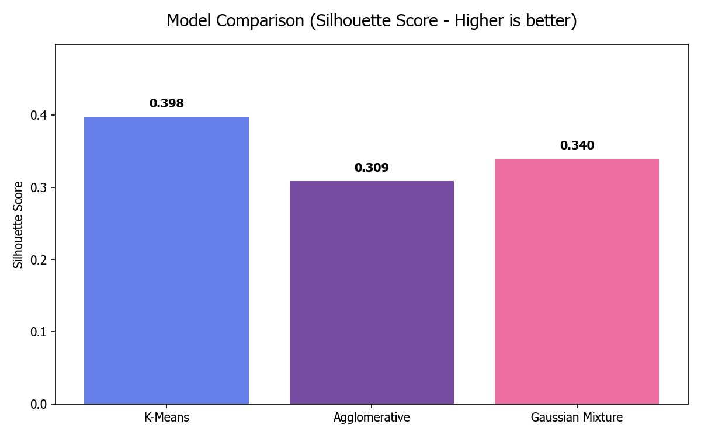
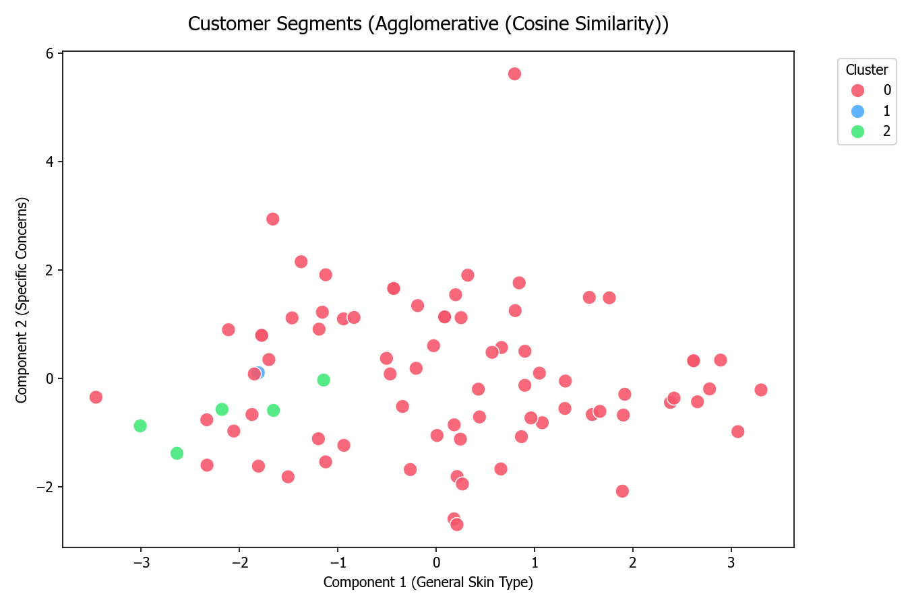
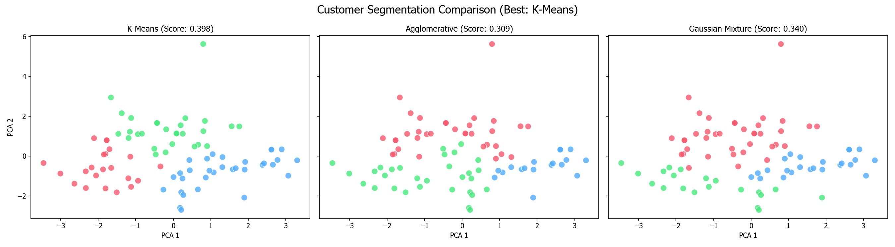
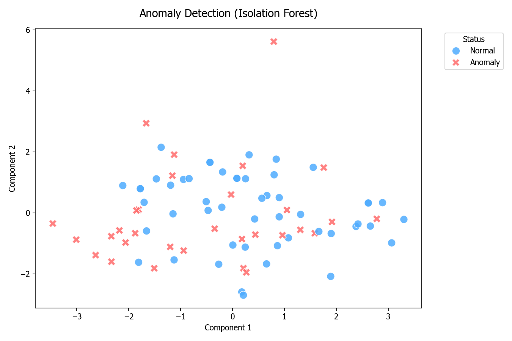
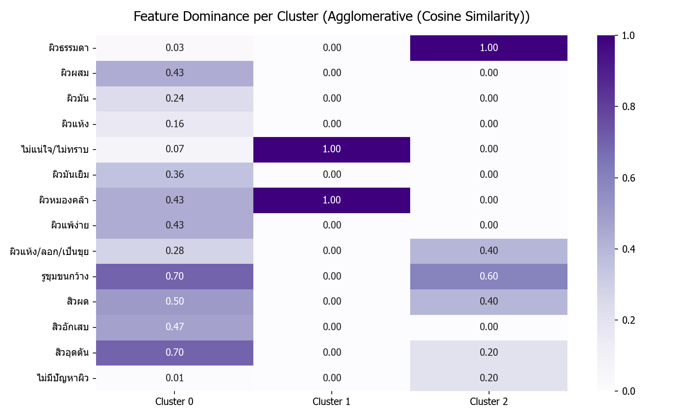

การจัดกลุ่มลูกค้า (Customer Segments)
วิเคราะห์พฤติกรรมลูกค้าด้วย 3 อัลกอริทึม
K-Means · Agglomerative · Gaussian Mixture
Model Comparison (Silhouette Score)
เปรียบเทียบคะแนน Silhouette Score ของทั้ง 3 โมเดล — คะแนนยิ่งสูงยิ่งดี
Silhouette Score เปรียบเทียบ 3 อัลกอริทึม
Bar chart แสดง Silhouette Score ของแต่ละโมเดล

PCA Visualization & Customer Distribution
ลดมิติข้อมูลด้วย PCA แล้วแสดงการกระจายตัวของกลุ่มลูกค้า
การกระจายตัวของกลุ่มลูกค้าจาก Best Model

จากกลุ่มตัวอย่างทั้งหมด แบ่งด้วย Best Model (k=3)
การเปรียบเทียบ 3 โมเดล (PCA View)
Scatter plot แสดงผลการ Clustering ของแต่ละอัลกอริทึมบน PCA 2D

Anomaly Detection (ค้นหาลูกค้ากลุ่มผิดปกติ)
วิเคราะห์พฤติกรรมที่แตกต่างจากกลุ่มด้วยอัลกอริทึม Isolation Forest
จุด X สีแดงแสดงลูกค้าที่มีพฤติกรรมแปลกแยกจากกลุ่มหลัก

Feature Dominance Heatmap
ค่าเฉลี่ยของฟีเจอร์เด่นในแต่ละ Cluster — ยิ่งเข้มยิ่งมีน้ำหนักสูง

Customer Persona รายกลุ่ม
ลักษณะเด่นและพฤติกรรมของลูกค้าในแต่ละ Cluster